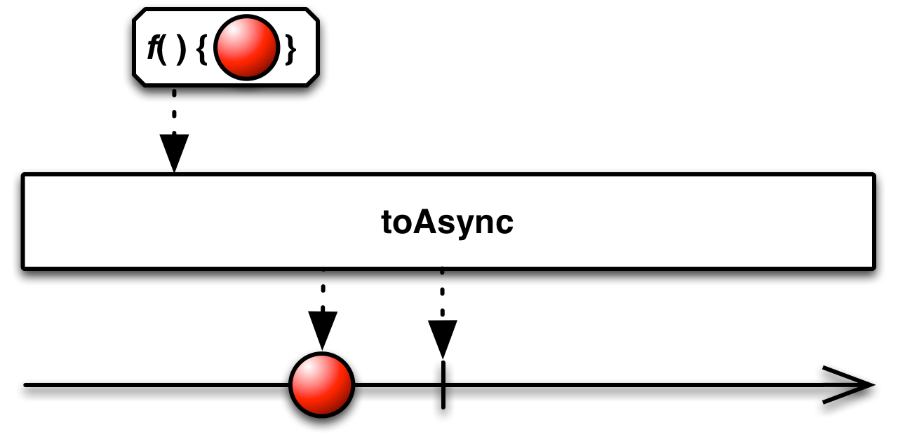

To async¶
-
classmethod
Observable.to_async(func, scheduler=None)¶ Converts the function into an asynchronous function. Each invocation of the resulting asynchronous function causes an invocation of the original synchronous function on the specified scheduler.
Example:
res = Observable.to_async(lambda x, y: x + y)(4, 3) res = Observable.to_async(lambda x, y: x + y, Scheduler.timeout)(4, 3) res = Observable.to_async(lambda x: log.debug(x), Scheduler.timeout)('hello')
Parameters: func (types.FunctionType) – Function to convert to an asynchronous function. Keyword Arguments: scheduler (Scheduler) – Scheduler to run the function on. If not specified, defaults to rx.Scheduler.timeout().Returns: Asynchronous function. Return type: (types.FunctionType)
Under construction...